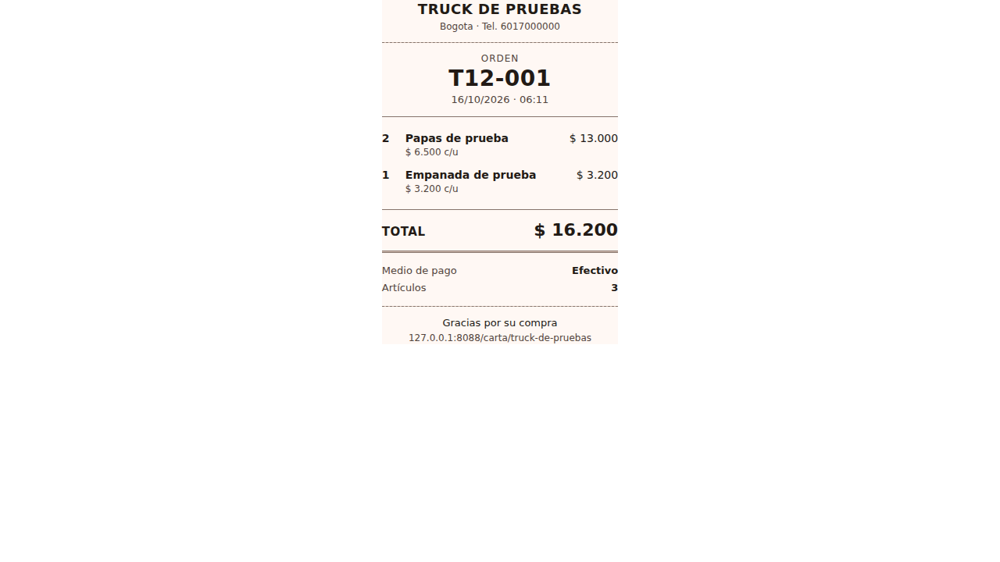
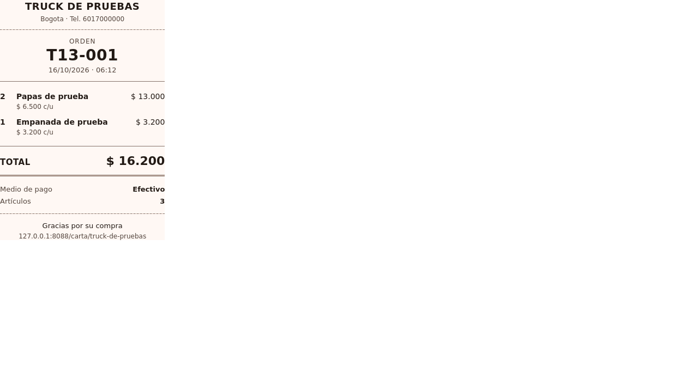

Commit: df7dab87540d2d488e85221ada8cdc7304a9de2d
Fecha UTC: 2026-10-16T11:12:17.152700+00:00
Ejecuciones: EX-091, EX-104
Fuente: repositorio Menu08 y respuestas reales de las herramientas. Este informe es una representación de los registros; las capturas de aplicación aparecen al final.
Resultado esperado del caso
La vista de impresión se adapta al formato de ticket térmico de 80 mm. El PDF generado contiene productos, cantidades, total y consecutivo de forma limpia y legible
Pendiente:- Firefox headless permite comprobar estilos de impresión; la exportación PDF mediante diálogo gráfico requiere estación de grabación.
Comparaciones ejecutadas
| Comprobación | Esperado | Obtenido | Resultado |
|---|
| CSS 80mm | true | true | Cumple |
| PDF generado | true | true | Cumple |
| CSS 80mm | true | true | Cumple |
Notas de ejecución
- Navegador real automatizado en Linux; no equivale a un dispositivo Android físico.
- PDF: evidencias/CP-CAJA-12-comprobante-80mm.pdf
Abrir registro JSON con respuestas HTTP y comprobaciones completas
Capturas originales de aplicación
CP-CAJA-12-chromium-impresion-80mm.png

CP-CAJA-12-firefox-impresion-80mm.png
